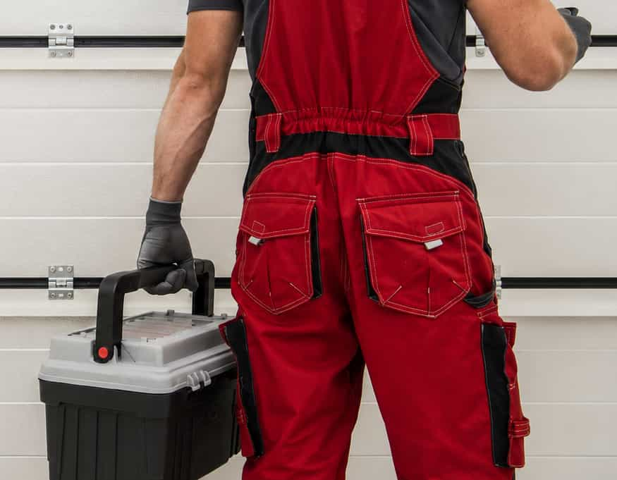

Removal and disposal
Ask whether old door removal, haul-away, cleanup, and disposal are included.

GARVOX helps homeowners review local provider options for replacement-style projects while keeping final provider verification in the homeowner’s hands.
Garage door replacement can involve removal, disposal, door material, insulation, hardware, track condition, opener compatibility, measurements, and warranty details. GARVOX helps homeowners compare provider options so they can ask better questions before moving forward.
Start a RequestAsk whether old door removal, haul-away, cleanup, and disposal are included.
Compare steel, wood-look, glass, insulated, and other replacement options.
Confirm whether the current opener, tracks, springs, and hardware need review.
A clear replacement comparison helps homeowners understand removal, disposal, door selection, insulation, opener compatibility, warranty, and provider availability.
Ask whether the quote includes removal of the existing door, hardware, or related parts.
Confirm whether haul-away, disposal, cleanup, or site protection is included.
Compare steel, aluminum, wood-look, glass, insulated, and other replacement options.
Ask how insulation affects comfort, door weight, noise, opener fit, and quote scope.
Confirm whether the existing opener can be used or if another option should be compared.
Review material, hardware, opener, labor, and project warranty details directly.
Door type can affect removal scope, material choice, opener compatibility, insulation, measurements, and warranty questions.
Sectional doors are common replacement options for residential garages. Compare providers familiar with panel material, insulation, track condition, opener fit, removal scope, and warranty questions.
Replacement quotes can vary by old door condition, material, opener fit, disposal, warranty, and provider availability.
Ask whether removal, haul-away, cleanup, and disposal are included or priced separately.
Compare door, hardware, opener, removal, labor, material, and possible fee details.
Ask whether the current opener can work with the replacement door or needs review.
Compare provider warranty details for the door, hardware, opener fit, and project scope.